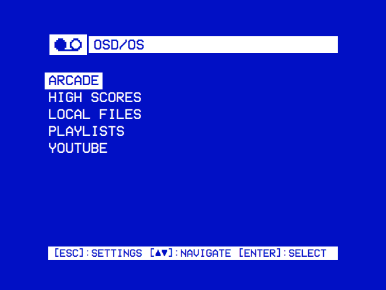
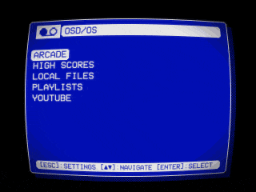

Your collection. Your channels.
Browse local files and your Plex, Jellyfin or Emby libraries. YouTube, Netflix and Prime Video sit in the same menus, in the same look.
SMART TV FOR CRT / VIDEO 1
Films, streams and arcade classics on a Raspberry Pi that boots straight into its menus, drawn like a VCR's on-screen display. For the CRT in your living room, the monitor in your arcade cabinet or any HDMI screen.
curl -fsSL https://osdos.tv/get.sh | sh -s -- imageiex "& { $(irm https://osdos.tv/get.ps1) } image"The OSD/OS image for a Raspberry Pi 4 or 5, from a Mac or Linux, or Windows' PowerShell. It lands in the current folder, checked against the SHA-256 GitHub keeps for it.
fetch -qo - https://osdos.tv/get.sh | shftp -MVo - https://osdos.tv/get.sh | shThe package for FreeBSD or OpenBSD, checked against the SHA-256 GitHub keeps for it, and the command that adds it.
curl -fsSL https://osdos.tv/get.sh | shThe AppImage on a Steam Deck or another Linux x86_64, the installer on Raspberry Pi OS, checked against the SHA-256 GitHub keeps for it.
curl -fsSL https://osdos.tv/get.sh | shThe DMG for an Apple Silicon Mac, checked against the SHA-256 GitHub keeps for it.
irm https://osdos.tv/get.ps1 | iexIn PowerShell: the zip, checked against the SHA-256 GitHub keeps for it and unzipped into an osdos folder.
FREE & OPEN SOURCE • RASPBERRY PI · BSD · LINUX · STEAM DECK · MACOS · WINDOWS

ACTUAL HARDWARE. ACTUAL OSD/OS.
YOU NEED
01 / THE EXPERIENCE
Switch it on and go straight to what you love. Big type, simple controls and one consistent way to browse. No desktop in the way.

Browse local files and your Plex, Jellyfin or Emby libraries. YouTube, Netflix and Prime Video sit in the same menus, in the same look.
Pick your next arcade game, keep its high scores and play with friends: RetroAchievements and RetroArch netplay for the games that support them.
Large, readable menus in the right proportions for a CRT's pixels. Composite, SCART RGB and JAMMA outputs for the hardware that has them, HDMI for the rest.
02 / ONE MORE CREDIT
MAME and FinalBurn Neo play the games. OSD/OS keeps what goes around them: the pictures, the scores, the achievements and the people to play with.

Your sets on a wheel, each with its picture, maker and time played. Filters go round with left and right: favorites, recently played, genres, makers, the games with achievements, the ones playable online, and a search.
On the cabinet's own sticks and buttons or on any gamepad, for up to six players. Your credits go in as the game starts, and Coin and Start together bring you back.
Each game's top three beside it: its RetroAchievements leaderboard once you sign in, or the machine's own high-score table. A game's details list its achievements, earned and not, with their badges.
Join a game others host in RetroArch's lobby, or host your own. LAN Play does the same on your own network, without the internet: a Pi with a Pi, or with a PC.
03 / MAKE IT YOURS
Keep the original two-colour look, or change the mood with a theme: colours, effects, transitions and menu music, together.
SELECT A LOOK
Build your look in Setup
04 / FIND YOUR CONNECTION
A Raspberry Pi image for a machine of its own. An app for the computer you already have. Choose your starting point.
THE DEDICATED SETUP
TESTED ON A PI 4 AND A PI 5
Write the OSD/OS image to an SD card and connect the Raspberry Pi to the TV. It boots straight into OSD/OS, ready for a remote, a keyboard or a gamepad.
OR FROM A TERMINAL
curl -fsSL https://osdos.tv/get.sh | sh -s -- imageiex "& { $(irm https://osdos.tv/get.ps1) } image"Downloads the image into the current folder and checks it against the SHA-256 GitHub keeps for it.
THE CABINET SETUP
TESTED IN A JAMMA CABINET
A Raspberry Pi to JAMMA board puts OSD/OS in a cabinet: browse the games with the cabinet's sticks and buttons, start straight on the Arcade screen, and play on the monitor it came with.
OR FROM A TERMINAL
curl -fsSL https://osdos.tv/get.sh | sh -s -- imageiex "& { $(irm https://osdos.tv/get.ps1) } image"Downloads the image into the current folder and checks it against the SHA-256 GitHub keeps for it.
THE BSD SETUP
TESTED IN A VIRTUAL MACHINE
Install OSD/OS on FreeBSD or OpenBSD as a package of the system's, with its own Qt 6, SDL2 and mpv packages, and run it as a desktop app: the menus, films and media servers, YouTube, and the arcade with the system's MAME, or FinalBurn Neo in its RetroArch.
OR FROM A TERMINAL
fetch -qo - https://osdos.tv/get.sh | shftp -MVo - https://osdos.tv/get.sh | shDownloads the system's package, checks it against the SHA-256 GitHub keeps for it, and gives the command that adds it as root.
.pkg for pkg add, a .tgz for pkg_add, in every releaseTHE LINUX SETUP
TESTED BY CI
Run OSD/OS on a Steam Deck or another Linux x86_64 computer from one AppImage, with Qt, SDL2 and mpv inside: nothing to install, not even on SteamOS's read-only system. Added to Steam as a non-Steam game, it starts from Gaming Mode and plays with the Deck's own controls.
OR FROM A TERMINAL
curl -fsSL https://osdos.tv/get.sh | shDownloads the AppImage, or the installer on Raspberry Pi OS, checks it against the SHA-256 GitHub keeps for it, and says what comes next. On a Steam Deck, in Desktop Mode's Konsole.
THE MAC SETUP
BUILT BY CI
Run OSD/OS as an app on an Apple Silicon Mac: drag it from the DMG into Applications, and add mpv with Homebrew. Try the interface before building a machine for it.
OR FROM A TERMINAL
curl -fsSL https://osdos.tv/get.sh | shDownloads the DMG, checks it against the SHA-256 GitHub keeps for it, and says what comes next.
brew install mpvTHE PC SETUP
TESTED ON A WINDOWS 11 PC
Unzip OSD/OS on a Windows 11 PC and run osdos.exe: nothing to install. MAME, and RetroArch with FinalBurn Neo, download from its own Settings in the versions the Pi image has, so a PC plays online and over the local network with a Pi.
OR FROM A TERMINAL
irm https://osdos.tv/get.ps1 | iexDownloads the zip, checks it against the SHA-256 GitHub keeps for it, and unzips it into an osdos folder.
osdososdos folder or on the PATH* Which outputs a Pi has depends on the model and the adapter. Check the display guide before choosing a mode.
A filled label: tried on real hardware. An outlined one: built and tested by machine. Every file, with its SHA-256 digest and the release notes, is in the latest release.
05 / PRESS PLAY
Prepare everything on your computer. Then let the little screen take over.
Download the Raspberry Pi image from the latest release and write it to an SD card with Raspberry Pi Imager's "Use custom" option.
Download the imageChoose the hardware, the display, the Wi-Fi and the look in your browser. Download the setup file and copy it to the card's bootfs partition.
Open OSD/OS SetupPut the card in the Pi and power it on. OSD/OS applies your settings as it starts. Add your films and your games, and settle in.
Read the install guideAlready running OSD/OS? Setup also prepares settings for the next start, and reads a card's own settings back.
BEFORE YOU PLUG IN
No. OSD/OS is made for CRTs first, but it draws just as well on an HDMI screen, and it runs as an app on FreeBSD or OpenBSD, a Linux PC, a Steam Deck, a Mac or a Windows PC.
The image is tried on a Raspberry Pi 4 and a Raspberry Pi 5 (8 GB): the Pi 4 as a TV, the Pi 5 in a JAMMA arcade cabinet, and LAN Play between the two. The outputs differ by model: a Pi 4 has the AV jack and the progressive 240p and 288p SCART modes, a Pi 5 composite from its pads and the interlaced SCART modes, with sound over HDMI or USB. Setup offers each board what it has.
No. RetroAchievements needs a supported game and a matching ROM set, and netplay runs through RetroArch with FinalBurn Neo. Local high-score tables are kept for every MAME game that has one, apart from the online leaderboards.
Each is a module that opens the service's own site in Chromium, with Widevine for the video, so you need a subscription and a device the service allows. The film lists come from TMDB with a free API key of your own. The wiki has the details.
Yes. OSD/OS is free software under the GNU GPL v3, developed by mehmet raif tasdemir (darkBLACK), based on Anthony Caccese's 240-MP. The source, the issues and the wiki are on GitHub.
THE PICTURE IS JUST GETTING STARTED.